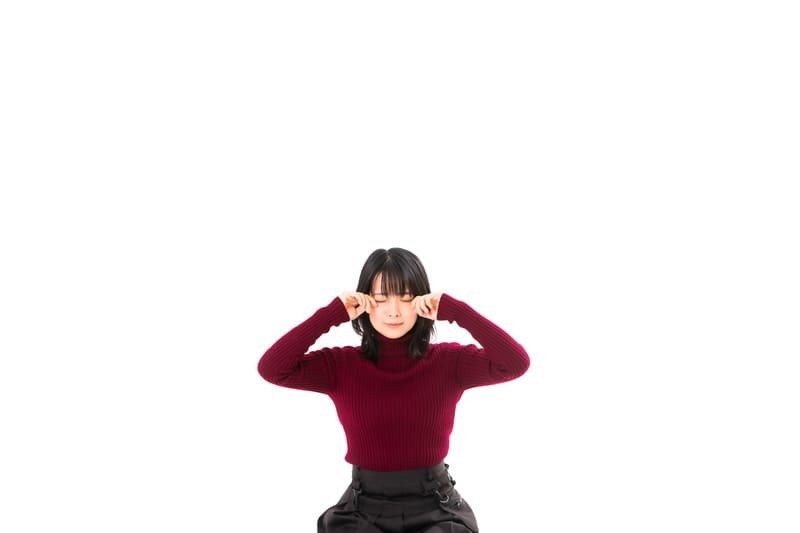
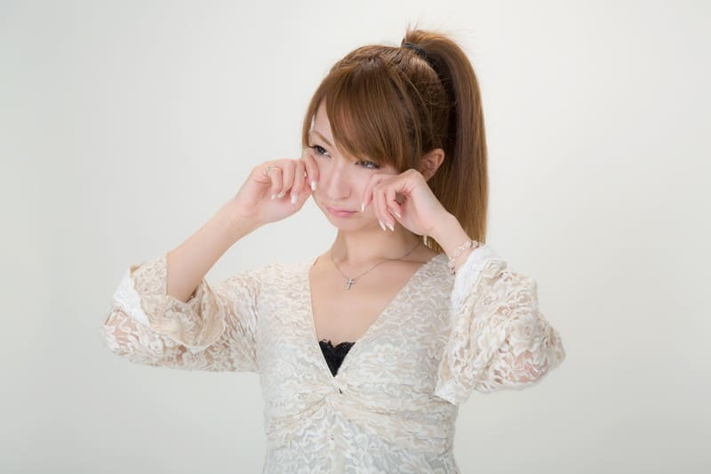
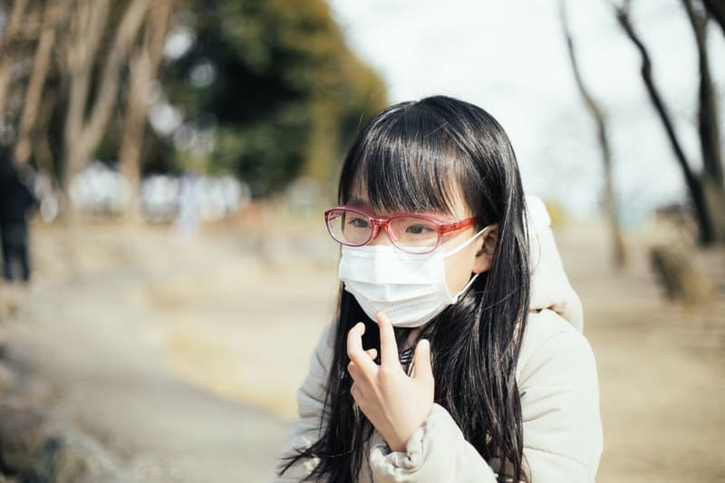
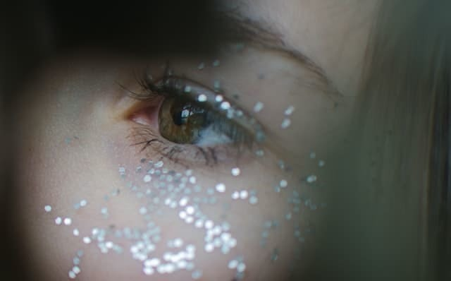

アレルギー性結膜炎の鍼灸
花粉やダニ等への過敏反応で目のかゆみや充血が起きます。眼科点眼と併用し、ツボ刺激と自律神経調整で不快感を和らげます。
まず知っておきたい要点と改善の流れ
スギやヒノキなどの花粉、ハウスダスト・ダニ、ペットの毛、コンタクトレンズのタンパク汚れ（巨大乳頭結膜炎）などの異物に対し、結膜の免疫が過剰に反応して炎症を起こす疾患です。ヒスタミンなどの化学伝達物質が放出されることで強いかゆみ、充血、流涙、まぶたの腫れが生じます。なお、黒目の周囲が輪状に赤くなる充血は眼球内のトラブルの可能性があるため、速やかな眼科受診が必要です。（公式解説）
このようなお悩みはありませんか？
- ✓季節の変わり目や通年で強い目のかゆみが続く
- ✓白目の充血やむくみ、涙目、目やにが気になる
- ✓まぶたの腫れや光のまぶしさ、目の乾きがある
- ✓目の症状とあわせて鼻水やくしゃみ、眼精疲労もつらい
当院の施術アプローチ・改善の流れ
なぜ鍼灸で改善へ向かうのか？（作用機序の図解）
アレルギー性結膜炎に対する鍼灸は、後頸部〜眼周囲の微小循環と毛様体筋・自律神経調整機序を通じて、お体本来の回復力を引き出します。

眼球周囲の危険な深刺しを避け、風池・天柱・合谷・太衝など安全な経穴へ繊細に施術します。
PC・スマホ作業や緊張で固まった首深層筋と眼輪筋周囲の血流を促し、重だるさを軽減します。
交感神経優位による目の乾き・ピント調節疲労を鎮め、涙液分泌とリラックス反応を助けます。
眼科の点眼・定期検査を最優先としつつ、日々の眼精疲労や頭痛・肩こりの連鎖を整えます。
院長YouTube解説・関連動画
体の中に入った異物に対して結膜が過敏に反応する病気

アレルギー性結膜炎は、体の中に入った異物に対して結膜が過敏に反応する病気です。目は直接空気に触れる部位です。そのため、色々な異物が入りやすい部位でもあります。
アレルギー反応を起こす原因となる物質はいろいろありますが、代表的なものとしては花粉やハウスダストなどが挙げられます。
改善方法や予防方法は原因となる物質によって違います。アレルギー性結膜炎では、まず原因を特定することが大事なのです。
アレルギー性結膜炎の症状は、充血や目やに、目の強いかゆみ

アレルギー性結膜炎の症状は、充血や目やに、涙目、目の強いかゆみです。目を激しく擦ってしまうと、痛みや目の違和感も現れます。
また、充血が進むとまぶたが赤く腫れてきます。そうなると、白目がむくみ、水がたまったような状態になるケースも見られます。
花粉が原因の場合は、目の症状に合わせて、くしゃみや鼻水、鼻づまりなどの症状が出ることもあります。
1. かゆみ
アレルギー性結膜炎の最も一般的な症状は、強いかゆみです。このかゆみは、アレルゲンが眼の結膜に接触することで、免疫応答が活性化される結果として発生します。特に、眼の角膜や白目の部分に感じられることが多いです。
2. 眼の充血
目が赤くなることも、アレルギー性結膜炎の典型的な症状の一つです。アレルゲンの刺激により、結膜の血管が拡張し、これが充血を引き起こします。
3. 涙の分泌
アレルギー反応に伴い、眼から涙が多く分泌されることがあります。これは体がアレルゲンを流し出そうとする自然な反応の一部です。
4. まぶたの腫れ
アレルギー反応の結果、まぶたが腫れてきたり、重たく感じたりすることがあります。これは炎症反応によるもので、重度の場合は目を開けるのが困難になることもあります。
5. 眼の分泌物
白や黄色の分泌物が目の周辺に付着することがあります。これは、アレルギー反応により結膜が炎症を起こし、粘液が過剰に分泌される結果として生じます。
6. 光がまぶしい
アレルギー性結膜炎の炎症反応により、目が光に敏感になることがあります。これは、結膜や角膜の腫れにより、光の反射や透過が変わるためです。
7. 眼の乾燥感
一見、涙の分泌が増加する症状と矛盾しているように思えますが、アレルギー反応により涙の成分バランスが崩れ、眼の乾燥感が生じることがあります。
8. 眼の疲れ
継続的な炎症反応により、眼が疲れやすくなることがあります。また、症状を和らげるために頻繁に目をこすることで、眼の疲れが増加することもあります。
9. 眼瞼皮膚の変化
長期間アレルギー性結膜炎に悩まされると、まぶたの皮膚に変化が現れることがあります。具体的には、皮膚が厚くなったり、色が暗くなったりすることがあります。
改善方法は、抗アレルギー点眼薬を使うこと
アレルギー性結膜炎の改善方法は、抗アレルギー点眼薬を使うことです。抗アレルギー点眼薬では、かゆみや充血などの症状を抑えることができます。
花粉が原因の場合、かゆみなどの症状が出る前に点眼薬を使い始めることで、症状を軽くすることができます。
なかなか症状が改善しない場合は、ステロイド点眼薬を使います。しかし、ステロイド点眼薬は眼圧が高くなるという副作用があります。そのため、継続して使う場合は定期的に病院に行くことが大事です。
点眼薬で症状が改善しない場合は、抗アレルギー薬を内服することもあります。
1. アレルゲンの回避
アレルギー性結膜炎の最も基本的な改善法は、アレルゲンとの接触を避けることです。例えば、花粉やハウスダストが原因の場合、窓を閉めて室内に入るのを防ぐ、空気清浄機を使用する、定期的に家の掃除を行うなどの方法が考えられます。
2. 抗アレルギー薬
抗ヒスタミン薬は、アレルギー反応に関与するヒスタミンの働きを抑える薬です。これにより、かゆみや充血などの症状が和らぐことが期待されます。
3. 壁細胞安定薬
これらの薬は、アレルギー反応の初期段階で働く壁細胞の活動を抑制することで、症状の発現を抑える役割があります。
4. ステロイド点眼薬
重度のアレルギー性結膜炎に対して、炎症を強力に抑制するステロイド点眼薬が用いられることがあります。しかし、長期間の使用には注意が必要であり、眼科医の指示に従って使用することが重要です。
5. 非ステロイド性抗炎症薬点眼薬
炎症を抑える効果があり、特にかゆみに効果的です。ステロイド薬と異なり、副作用のリスクが低いため、長期的な使用も考えられます。
6. 免疫法
特定のアレルゲンに対する体の反応を減少させるための方法で、アレルギーショットや舌下免疫法などがあります。
7. 湿布や冷却
症状の緩和のために、冷たい布を眼の上に置くことで、炎症やかゆみを和らげることができます。
8. 人工涙液
眼の乾燥を防ぎ、不快感やかゆみを和らげるために、人工涙液が用いられることがあります。
9. 結膜のケア
炎症を和らげるために、結膜の洗浄や、特定の改善薬を含む点眼薬の使用が考えられます。
抗ヒスタミン点眼薬：これはアレルギー症状の発生に関与するヒスタミンの作用を遮断します。オロパタジンやケタチフェンなどがこのカテゴリに含まれます。
壁細胞安定薬：アレルギーの初期段階で作用する壁細胞の活動を抑制するための薬。ケタチフェンやナファゾリンなどが含まれます。
ステロイド点眼薬：重度の炎症を持つアレルギー性結膜炎に対して、炎症を強力に抑制するために用いられることがあります。プレドニゾロンやロトプレドノールなどが該当します。
非ステロイド性抗炎症薬点眼薬：炎症を抑える効果があり、フラプロフェンやケトロラクなどがこのカテゴリに含まれます。
人工涙液：結膜の乾燥や炎症を緩和するために使用される。特に乾燥や刺激が伴う場合に有効です。
抗生物質点眼薬：アレルギー性結膜炎の症状が重い場合や、二次的な細菌感染のリスクが考えられる場合に使用されることがあります。
マストセル安定薬：アレルギー反応を引き起こす壁細胞の活性化を抑えるための薬。シロメラスチンやクロモグリク酸ナトリウムがこのカテゴリに含まれます。
緩和薬：アレルギー症状を緩和するための薬。通常、アレルギー性結膜炎の症状が軽度の場合や、症状の出現を予防するために使用されます。
花粉の飛ぶ季節は花粉ができるだけ目に入らないように対策をする

花粉が原因の場合は、花粉の飛ぶ季節には花粉ができるだけ目に入らないように対策をすることが大事です。自分でできる対策としては、眼鏡をつけたり帽子を被ったりすることが挙げられます。
花粉の予報もチェックし、花粉が多く飛ぶ予報の日には洗濯物を外に干さないようにすることも大事です。
ハウスダストが原因の場合は部屋をこまめに掃除したり布団をクリーニングに出したりすることで清潔に環境に保つことを心がけましょう。
おすすめ記事


眼のお悩みのツボ図解とセルフケア
実際の施術ではお一人おひとりの体質・症状に合わせて選穴しますが、眼科領域の補完ケア（ドライアイ・眼精疲労・視神経ケア研究）の臨床でよく用いられる代表的なツボの目安です。

📌 代表的なツボの詳細一覧表を開く（6穴） ▼
| ツボ名 | 位置の目安 | 主な狙い | セルフケアの注意点 |
|---|---|---|---|
| 睛明（せいめい） | 目頭と鼻の付け根の間のくぼみ | 眼精疲労・ドライアイ・眼周囲の血流促進 | 眼球は絶対に押さない（緑内障の方は圧迫厳禁） |
| 攢竹（さんちく） | 眉頭の内側端のくぼみ | 目の重だるさ・眼精疲労・前頭部の緊張緩和 | 骨縁を軽く支える程度にし眼球へ力を逃がさない |
| 太陽（たいよう） | 眉尻と目尻の中間からこめかみ側へ指1本後ろ | 眼精疲労に伴うこめかみ頭痛・眼輪筋緩和 | 血管・神経が集まるため円を描くように優しく |
| 四白（しはく） | 瞳孔の真下、目の下の骨縁から指1本分下 | ドライアイ・目の下の循環・眼輪筋疲労ケア | 眼窩下神経出口のため強圧禁止、軽圧で |
| 風池（ふうち） | 後頭部の生え際、耳後ろと首筋の間のくぼみ | 後頸部の筋緊張解除による眼血流・自律神経ケア | 首を反らしすぎず斜め上へゆっくり |
| 合谷（ごうこく） | 手の甲、親指と人差し指の骨が交わる手前 | 顔面・眼周囲の循環促進、頭痛緩和の遠隔穴 | 妊娠中は強い刺激を避ける |
国際査読論文の科学的エビデンス
国際的な医学データベース（PubMed・Cochrane等）で報告されている眼科領域の補完ケア（ドライアイ・眼精疲労・視神経ケア研究）領域の代表的な査読済み鍼灸研究をまとめています（標準治療との併用や研究上の限界を含めて正確に掲載）。
📚 査読論文データ・PubMed出典リンクを開く（4件） ▼
| 年・研究デザイン | 対象・規模 | 主な結果 | 限界・出典 |
|---|---|---|---|
| 2024年 メタ解析 | ドライアイ 16試験（n=1,383：人工涙液併用） | BUT（SMD 1.25, P<0.0001）、シルマー試験（SMD 1.55, P<0.0001）、角膜染色・総有効率（OR 4.09）が有意改善。 | 自覚症状OSDIは有意差なし（P=0.15）。人工涙液との併用評価。 Medicine (PMID: 38181299) |
| 2019年 二重盲検RCT | ドライアイ 49名（米国・6か月追跡） | 実鍼群はOSDIスコアが1週〜6か月まで有意改善（6か月p<0.01）、乾燥感・充血も有意軽減。 | 小規模・客観的涙液指標（TBUT等）は有意差なし。 Clin Ophthalmol (PMID: 31114151) |
| 2020年 Cochraneレビュー | 緑内障・高眼圧症 3 RCTs（n=137） | 一時的な眼圧低下の報告はあるが8週時点で差消失、視力は有意差なし。 | 全試験が高バイアス・確実性非常に低。点眼治療の代替不可。 Cochrane (PMID: 32032457) |
| 2025年 メタ解析 | 変性眼疾患 21研究（緑内障・黄斑変性等） | 総有効率はOR 3.52（p<0.00001）だが、統合視力（p=0.50）・眼圧（p=0.11）に有意差なし。 | 非ランダム化研究含む。眼科標準管理下での補完研究段階。 Complement Ther Med (PMID: 40850524) |
参考文献・出典
- 銀座そうぜん鍼灸院「アレルギー性結膜炎の公式解説ページ」
- 2024年 メタ解析（ドライアイ 16試験（n=1,383：人工涙液併用））— Medicine (PMID: 38181299)
- 2019年 二重盲検RCT（ドライアイ 49名（米国・6か月追跡））— Clin Ophthalmol (PMID: 31114151)
- 2020年 Cochraneレビュー（緑内障・高眼圧症 3 RCTs（n=137））— Cochrane (PMID: 32032457)
- 2025年 メタ解析（変性眼疾患 21研究（緑内障・黄斑変性等））— Complement Ther Med (PMID: 40850524)
よくある質問（FAQ）
Q. 自宅でも押せるおすすめのツボはありますか？▼
Q. 眼科の目薬を使いながら鍼灸を受けても大丈夫ですか？▼
あわせて読まれる関連疾患（眼のお悩み）
白目やまぶた裏の粘膜が炎症を起こす病気です。感染性は眼科受診を最優先に、アレルギー性の体質・免疫バランスを整えます。
感染やコンタクト障害等で角膜に炎症が起きる疾患です。急性期は眼科治療を最優先とし、安定期に遠隔のツボ等で体調を整えます。
アトピー性皮膚炎に伴う眼疾患の総称です。眼科・皮膚科での治療を最優先に、こすらない予防と安定期のツボ・体調ケアを支えます。
網膜の後方で焦点が結ばれる屈折異常です。眼科での矯正を基本とし、太陽や和髎などのツボを活用した鍼灸で眼精疲労をケアします。
細菌感染による慢性結膜炎です。感染期は眼科での抗菌薬治療を最優先とし、完治後の眼精疲労や体調管理を補完的に支えます。
虹彩・毛様体・脈絡膜に炎症が起きる疾患です。眼科専門医での抗炎症治療と継続通院を最優先とし、安定期の体調を支えます。
おひとりで悩まず、まずはご相談ください
銀座本院・川口・大宮・横浜・博多・田無の各院でご予約を承っております。